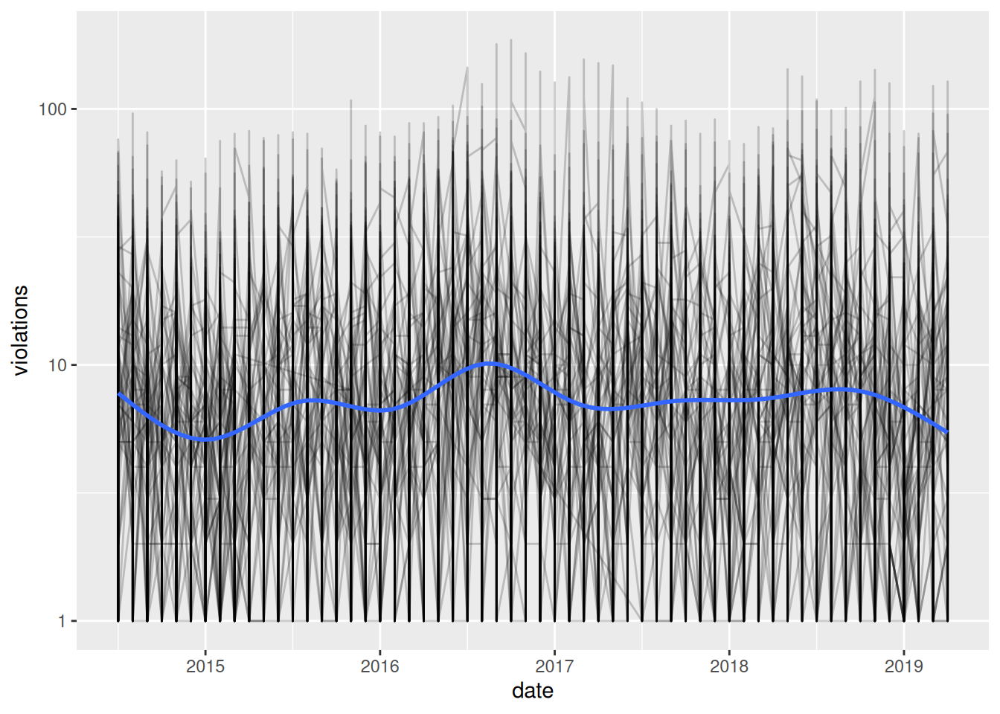
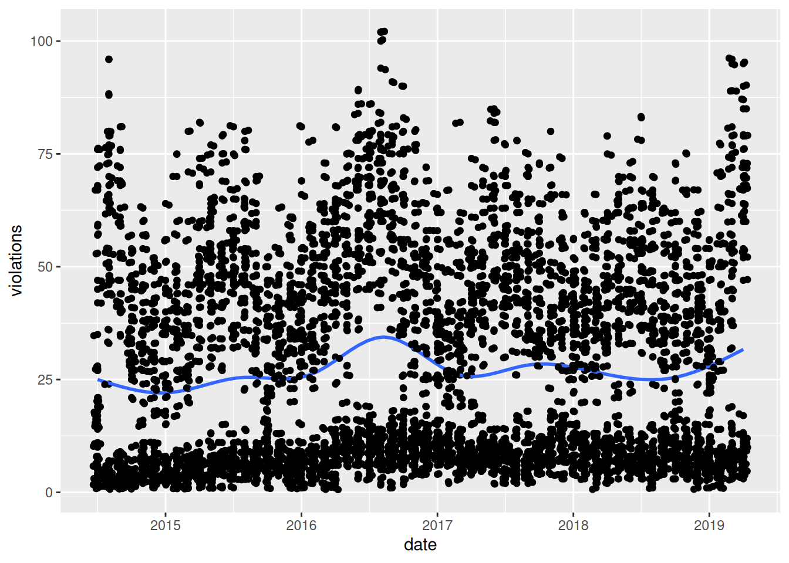
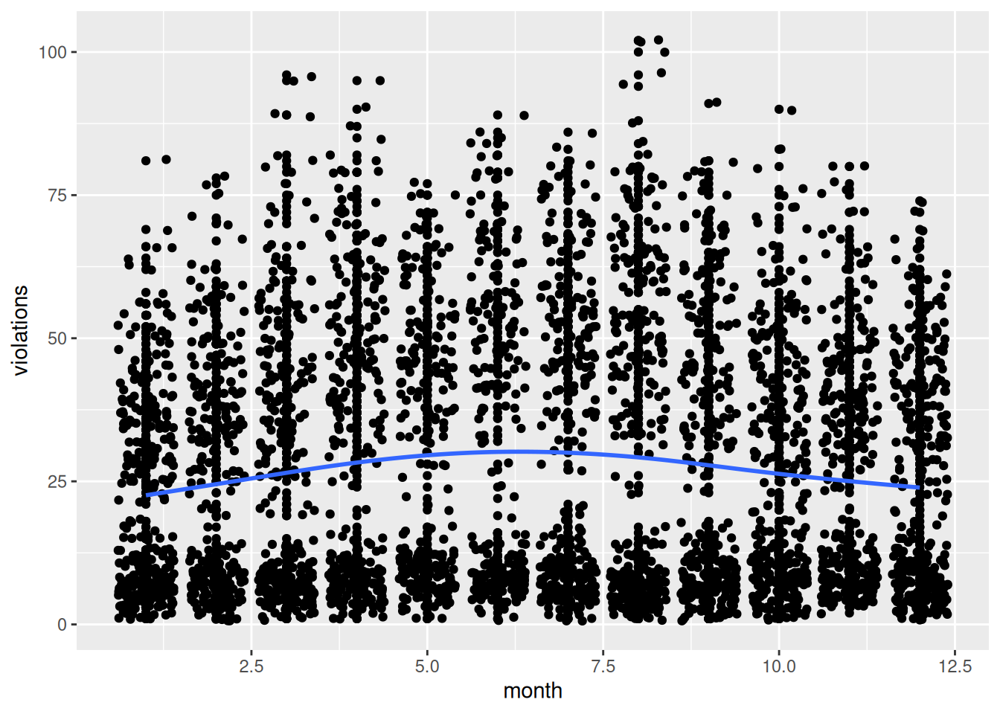
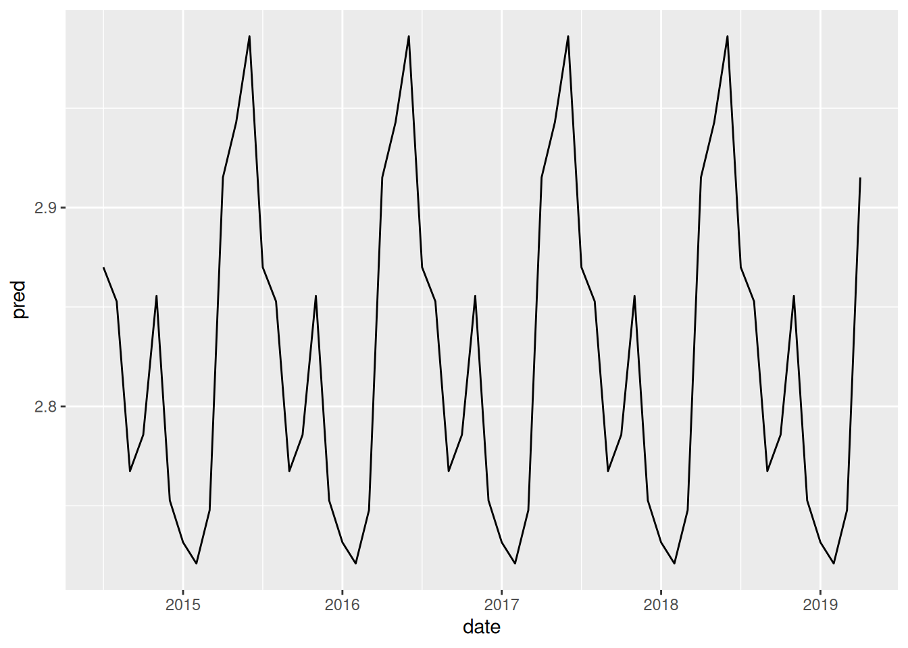
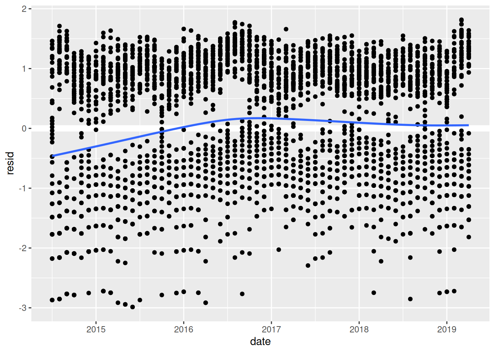
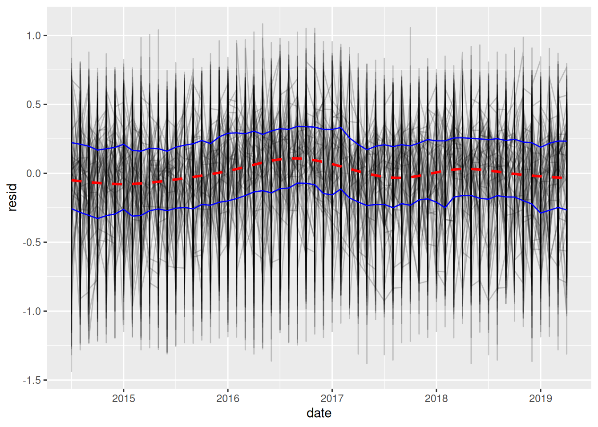

These data reflect the daily volume of violations created by the City of Chicago Red Light Program for each camera since July 1, 2014.
INTERSECTION = Intersection of the location of the red light enforcement camera(s). There may be more than one camera at each intersection
CAMERA ID = A unique ID for each physical camera at an intersection, which may contain more than one camera
ADDRESS = The address of the physical camera (CAMERA ID). The address may be the same for all cameras or different, based on the physical installation of each camera
VIOLATION DATE = The date of when the violations occurred. NOTE: The citation may be issued on a different date
VIOLATIONS = Number of violations for each camera on a particular day
X COORDINATE = The X Coordinate, measured in feet, of the location of the camera. Geocoded using Illinois State Plane East
Y COORDINATE = The Y Coordinate, measured in feet, of the location of the camera. Geocoded using Illinois State Plane East
LATITUDE = The latitude of the physical location of the camera(s) based on the ADDRESS column. Geocoded using the WGS84
LONGITUDE = The longitude of the physical location of the camera(s) based on the ADDRESS column. Geocoded using the WGS84
LOCATION = The coordinates of the camera(s) based on the LATITUDE and LONGITUDE columns. Geocoded using the WGS84
Data clean
Code
(red_light <- red_light_raw %>% janitor::clean_names() %>%separate(violation_date, c("month", "day", "year"), "/") %>%mutate_at(vars(month, day, year),~as.numeric(.)))## # A tibble: 466,107 × 12## intersection camera_id address month day year violations x_coordinate## <chr> <dbl> <chr> <dbl> <dbl> <dbl> <dbl> <dbl>## 1 IRVING PARK AND … 2763 4700 W… 4 9 2015 4 NA## 2 VAN BUREN AND WE… 2054 2400 W… 4 14 2015 5 NA## 3 115TH AND HALSTED 2552 11500 … 4 8 2015 5 NA## 4 IRVING PARK AND … 2764 4700 W… 4 19 2015 4 NA## 5 ELSTON AND IRVIN… 1503 3700 W… 4 23 2015 3 NA## 6 31ST AND CALIFOR… 2064 2800 W… 9 14 2014 3 NA## 7 31ST AND CALIFOR… 2064 2800 W… 12 16 2014 1 NA## 8 31ST AND CALIFOR… 2064 2800 W… 1 30 2015 4 NA## 9 115TH AND HALSTED 2552 11500 … 3 28 2015 14 NA## 10 WENTWORTH AND GA… 2261 5500 S… 4 6 2015 11 NA## # ℹ 466,097 more rows## # ℹ 4 more variables: y_coordinate <dbl>, latitude <dbl>, longitude <dbl>,## # location <chr>
Simple EDA
I’m going to look at the number of red light violations by intersection across time.
Turns out, this graph isn’t very useful. It’s hard to get an idea of what’s really going on here because there is so much lumped at bottom. For now, I’m going to focus on the more popular intersections (i.e., those with more violations).
Focus on popular intersections
These results might be a bit misleading–maybe popular intersections are fundamentally different (e.g., more dangerous, more lucrative). But, it will at least be a good place to start. Since there are 173 intersections in this dataset, I’m going to arbitrarily select all intersections that lead to greater than 5.5 red light violations on average.
Code
(intersections <- red_light %>%group_by(intersection) %>%summarize(avg =mean(violations)) %>%arrange(desc(avg)))## # A tibble: 183 × 2## intersection avg## <chr> <dbl>## 1 CICERO AND I55 33.8## 2 LAKE AND UPPER WACKER 31.4## 3 LAKE SHORE DR AND BELMONT 26.9## 4 VAN BUREN AND WESTERN 20.8## 5 LAFAYETTE AND 87TH 18.7## 6 STATE AND 79TH 16.6## 7 STONEY ISLAND AND 76TH 15.8## 8 LINCOLN AND MCCORMICK 15.2## 9 WENTWORTH AND GARFIELD 14.8## 10 ARCHER AND CICERO 14.4## # ℹ 173 more rows(red_light_popular <- red_light %>%semi_join(filter(intersections, avg >5.5)) %>%mutate(date = year + (month -1) /12))## Joining with `by = join_by(intersection)`## # A tibble: 135,780 × 13## intersection camera_id address month day year violations x_coordinate## <chr> <dbl> <chr> <dbl> <dbl> <dbl> <dbl> <dbl>## 1 VAN BUREN AND WE… 2054 2400 W… 4 14 2015 5 NA## 2 115TH AND HALSTED 2552 11500 … 4 8 2015 5 NA## 3 115TH AND HALSTED 2552 11500 … 3 28 2015 14 NA## 4 WENTWORTH AND GA… 2261 5500 S… 4 6 2015 11 NA## 5 115TH AND HALSTED 2552 11500 … 9 1 2014 14 NA## 6 115TH AND HALSTED 2552 11500 … 10 19 2014 18 NA## 7 115TH AND HALSTED 2552 11500 … 7 12 2014 31 NA## 8 31ST ST AND MART… 2121 3100 S… 7 7 2014 21 NA## 9 115TH AND HALSTED 2552 11500 … 11 18 2014 9 NA## 10 VAN BUREN AND WE… 2054 2400 W… 7 10 2014 11 NA## # ℹ 135,770 more rows## # ℹ 5 more variables: y_coordinate <dbl>, latitude <dbl>, longitude <dbl>,## # location <chr>, date <dbl>
Decreasing the sample reduced the number of intersections that were lumped at the bottom, but there are still a lot of data there. Let’s try adding some transparency and a log10 transformation.
Code
ggplot(red_light_popular, aes(date, violations)) +geom_line(aes(group = intersection), alpha =1/5) +scale_y_log10() +geom_smooth(se =FALSE)## `geom_smooth()` using method = 'gam' and formula = 'y ~ s(x, bs = "cs")'

The transformation does a fairly good job of shrinking the high violation intersections down and scaling the low violation intersections up. Now, it looks like there might be a reoccurring pattern occurring within a year. So, I’m wondering if there is a seasonal trend. To look at this, let’s focus on a single intersection for the moment: Lake Shore Dr. and Belmont.
What’s the pattern?
Code
lsd_belmont <- red_light_popular %>%filter(intersection =="LAKE SHORE DR AND BELMONT")ggplot(lsd_belmont, aes(date, violations)) +geom_point(aes(group = intersection)) +geom_smooth(se =FALSE) +geom_jitter()## `geom_smooth()` using method = 'gam' and formula = 'y ~ s(x, bs = "cs")'

Now, let’s see how the monthly patterns change by year for the same intersection.
Code
ggplot(lsd_belmont, aes(month, violations)) +geom_point(aes(group = year)) +geom_jitter() +geom_smooth(se =FALSE)## `geom_smooth()` using method = 'gam' and formula = 'y ~ s(x, bs = "cs")'

Both of these graphs supports the seasonal trend idea–there is a bump in red light violations every summer, between May and August.
Now, I have a few questions:
Are these patterns the same for all intersections?
What’s driving these peaks? More drivers/tourists on the road in summer months?
What’s producing the gap between the high violations (above 25 violations) and low violations (below 25 violations)?
Is this pattern more pronounced in certain parts of the city (e.g., Lake Shore and Belmont is by a popular highway)?
What happened in the summer/fall of 2016?
Can we remove this pattern?
Code
belmont_mod <-lm(log(violations) ~factor(month), data = lsd_belmont)lsd_belmont %>%add_predictions(belmont_mod) %>%ggplot(aes(date, pred)) +geom_line()

This shows the model has captured the seasonal pattern, but plotting the residuals will probably be more useful.
Code
lsd_belmont %>%add_residuals(belmont_mod) %>%ggplot(aes(date, resid)) +geom_hline(yintercept =0, color ="white", size =3) +geom_point() +geom_smooth(se =FALSE)## Warning: Using `size` aesthetic for lines was deprecated in ggplot2 3.4.0.## ℹ Please use `linewidth` instead.## `geom_smooth()` using method = 'gam' and formula = 'y ~ s(x, bs = "cs")'

It looks like the seasonal model does a good job of explaining the data, especially for 2017 on. And, by removing the strong monthly pattern, we can see the long-term trends much more clearly. There’s a steady increase from the beginning of the data to about 2016 when the number of red light violations peak. They then take a slight dip but remain relatively stable through the present.
More questions:
What’s driving this trend?
What happened around 2016?
Is this pattern the same for all intersections?
All intersections
Now, I want to extend this model to all of the intersections in the sample.
Code
by_intersection <- red_light_popular %>%group_by(intersection) %>%nest()intersection_model <-function(df) {lm(log10(violations) ~factor(month), data = df)}partioned <- by_intersection %>%mutate(model =map(data, intersection_model),resids =map2(data, model, add_residuals) ) %>%unnest(resids)ggplot(partioned, aes(date, resid)) +geom_line(aes(group = intersection), alpha =1/5) +stat_summary(geom ="line", fun.y =function(x) quantile(x, 0.25), color ="blue") +stat_summary(geom ="line", fun.y =function(x) quantile(x, 0.75), color ="blue") +geom_smooth(se =FALSE, linetype ="dashed", color ="red")## Warning: The `fun.y` argument of `stat_summary()` is deprecated as of ggplot2 3.3.0.## ℹ Please use the `fun` argument instead.## `geom_smooth()` using method = 'gam' and formula = 'y ~ s(x, bs = "cs")'

After removing the seasonal pattern, the long-term trend becomes much more stable. However, some unexplained patterns remain.
Further questions:
What drove the increase in violations between 2014 and mid-2016?
What happened at the end of 2016/beginning of 2017?
Do violations occur systematically throughout the city, or are certain locations more likely to lead to higher violations?
Citation
BibTeX citation:
@online{2019,
author = {},
title = {EDA: {Chicago} Red Light Camera Violations},
date = {2019-04-29},
url = {https://www.jrwinget.com/blog/2019-04-29-chicago-red-light/},
langid = {en}
}